Course: Two Marys
Lecture #5: Mary Magdalen In Cult & Art
NOTE: Text in Highlight is Optional
The church of Ste. Marie-Madeleine at Vezalay in Burgundy, France was the center of pilgrimage from the mid eleventh cent, and fourth in popularity in all Christendom. The church is in the Romanesque style, but little trace remains after the French Huguenots burned the relics. It has been restored, and her feast day is still celebrated on July 22.
THE CULT OF RELICS
How Mary Magdalene relics came to Burgundy, how she became one of the most beloved saints in the Middle Ages, is in part due to the cult of relics.
The earliest known example of the veneration of relics appears in the story of the martyrdom of Polycarp, the aged bishop of Smyrna (69-155 CE). After his death in Rome, it was said a sweet smell had arisen from his charred remains. Thus, a sweet aroma is now one of the features of discoveries of holy relics.
Christians were criticized by the Romans for the gruesome practice of collecting "bones and skulls of criminals who had been put to death for numerous crimes" and claiming they were gods, thinking they became better by defiling themselves at their graves. Xian writers were careful to distinguish between worship (latria) and veneration (dulia) accorded the saints.
Jerome tried to justify the practice by referring to the miracles worked thru relics of saints. As the Smyrna Christians had written of Polycarp’s bones, a saints relics were of a "greater value than precious stones and a higher price than gold".
Relics were customarily "discovered", the technical expression being "invention", and covers both the medieval and modern significance of the word. St. Helena, Constantine's mom, found some of the most famous including the Holy Cross.
In 390 two monks "found" the head of John the Baptist in the ruins of Herod's palace in Jerusalem and in 415 St. Stephan's body was discovered. Several churches claimed to have the "holy foreskin" and relics of the Virgin Mary were legion. No bones, since she had been assumed into heaven, but plenty of hair, virginal milk, girdle and grave clothes and dress.
A list of famous relics made in 1839 included: 2 heads of John the Baptist, the hem of Jacob's coat of many colors, a lock of hair with which Mary Magdalene wiped the Savior’s feet. And by the end of the 13th century, Mary Magdalene had left behind at least five corpses, in addition to many whole arms and smaller pieces of her body.
Relics came to assume such an important part in Christian life that the 2nd council of Nicaea in 787 fulminated against those who despised them and ruled that churches could not be consecrated without them.
The trade in relics was to have an extraordinary influence on the economic and social development of the western world, and only increased with the return of the crusaders, especially the fourth crusade when many relics were brought back.
Reverence did not prevent mishandling. In the East, the bodies of saints and martyrs were exhumed, dismembered and transported all over the empire. By the 5th Century, dismemberment had become an accepted practice since, in eastern philosophy, the soul was present in each part of the body. A finger of Mary Magdalen was, therefore, as miraculous as her whole body.
The Byzantine emperors were the first to collect relics and w/in 5 centuries amassed the largest collection in the world, to be dispersed by the crusaders when they took Constantinople in 1204.
"Holy theft" become a wide practice with churches and abbeys stealing from each other with the saint's "permission". No disgrace was attached and in fact the perpetrators became heroes. Relics were so frequently stolen that in 1215 the Lateran council forbade them to be exhibited except on feast days.
Vezelay, in response to pilgrims losing faith, "invented" its own relic in the 13th century. Mary Magdalen's tomb had been at Ephesus since the 6th century and her feast day July 22. It precedes Vezalay by 500 years.
A ninth century Anglo-Saxon martyrology describes how MM, after Jesus Ascension, could no longer look on any other man and went into the desert and lived there from then on. Yet another character thus accrued to her, an Egyptian Mary, a fifth cent. harlot who, after 17 years of infamy in Alexandria, earned her way across the sea to Palestine and spent the last 47 years of her life repenting in the deserts of the Holy land.
Devotion to Mary Magdalene had been accelerating in the west during the 9th and 10th centuries. The cult of Mary Magdalene at Vezelay first became known in the 11th century. It was under an abbot named Geoffrey, a Clunic, that a bull from Leo IX in 1050 included Mary Magdalene as the head of the abbey’s patrons. In 1058, Pope Stephen IX confirmed her as sole patron and ratified the abbey's possession of her relics. In 1265 the saint's body was "found" at the abbey.
Pilgrims flocked from all over France and Europe once her body had been "found" and verified. (it was the copious amount of hair that convinced 2 bishops it was her). Her body was "found" Again in 1279 in Provence in the church of St. Maximim. It was this church which finally won the pilgrimage contest.
Without the monastic rivalries of the Middle Ages and the pilgrimage to Vexelay, Mary Magdalene might not have become as popular as she did. Dominicans adopted her as the penitent Magdalen. Her cult went to Italy and all over the peninsula from the 13th century on. A movement founded in her name in Germany in 1225 for the moral relief of prostitutes which grew to enormous proportions and lasted into the 20th century.
MARY MAGDALEN AND THE REPENTENT SINNER
Mary Magdalene became the most popular female saint of the Middle Ages and her "life" a best seller. After the Virgin Mary, "no other woman in the world was shown greater reverence or believed to have greater glory in heaven."
Her popularity came from two things: The focus on Christ's passion and the role she played in it and the church’s emphasis on sin and repentance and the individual's responsibility for it. in 1215 the Gregorian reforms made it mandatory of everyone to go annually to confession and to commune annually.
The legend of Mary Magdalene fasting and taking heavenly communion in the "wilds" of Provence made her an appropriate model for this sacrament also. Her process from prostitute to penitent was an edifying story that gained embellishments so by the 12th cent. she had acquired an entire pedigree and persona which bore little relationship to the gospels.
One legend has her married to St. John the Evangelist at the marriage of Cana and when Jesus called John, Mary Magdalen, enraged, determined to live a profligate life. This legend is referred to in a middle German poem, Der Saelden Hort (1298) as well as some artwork of that period. She later repented and became a follower of Jesus, according to the legend.
She was "created" by Gregory the Great and thus an expression of current ecclesiastical ideals. She was "everywoman" who had committed fornication, the sin regarded by the church as the most evil and pervasive, the primal deed of Eve.
Gregory the VII in 1073 issued a decree forbidding marriage among the clergy in a comprehensive attempt to purify the church by curbing immorality among the secular clergy and thus imposing the ideal of monastic virginity upon the whole church.
Any sexual misdemeanor on the part of the clergy was henceforth regarded as fornication. By imposing such an ideal, the church set up a tension between itself and real women which could never be resolved, and where the natural sexual female could only assume the aspect of Eve.
Woman, rather than women, became the subject of many anti-female diatribes written by Cistercians, Franciscans and Dominicans, all competitors for the Virgin Mary's favors, who rivalled each other in the litany of misogyny.
It is to these writings that Mary Magdalene as Everywoman owes her medieval stereotype, imagined and created by monk and friar, and invariably she is the figure upon whom the holy man dwells at most length, the redeemed sinner in Luke 7 who rejects her moral vulnerability and sexual nature, as Eve's true descendent. Thus, Mary Magdalene comes to represent Pride and downfall, while the virgin comes to represent humility. This reflected the medieval churches’ polarized vision of woman herself.
It is, as we shall discuss later, at this time between the 11th and 13th century that the cult of the Virgin Mary reaches its heights. The niche into which Mary Magdalene now fit was a figure who could play the part which the virgin, because of her sinlessness, could not, as a model for mere mortals who could sin and sin again and yet thru repentance still hope to reach heaven.
From the early 12th century, the crusaders fervor to recapture the Holy Sepulcher from the hands of the infidels had kindled an ardent interest in Christ's passion and in Mary Magdalen, her legendary conversion now complete, was one of the central figures in the dramatic scenes which illustrated it.
In the 13th century, she appeared as lover, mourner and weeper in the events surrounding the crucifixion. In devotional literature of that century, she is re-visualized and things that might have taken place' was included by artists and writers.
Mary Magdalen place is no less prominent than the Virgin Mary's in this time and often takes precedence over it. "weep with the Magdalen" was a refrain to the faithful. She was the "beloved discipless', the "apostles apostle', and above all, the woman who loved Christ most and whom he loved most. Mary Magdalen was again the Bride in the Song of Songs., the ardent lover.
The Franciscans did much to spread the idea of the suffering, broken and human Christ who died for the sins of mankind. The great Italian crucifixes of the late 12th and 13th centuries painted for their churches show the tragic Christ, not the Byzantine Christo Rey. Mary Magdalene is shown often as a figure at the foot of the cross representing all humanity who had contributed to Christ's suffering. (plate 29)
This closeness to Christ is also shown in showing Mary of Bethany as Mary Magdalene and she becomes the example of the contemplative life Mary of Bethany is shown anointing Jesus feet (pl. 30: Mary Magdalene as Luke's sinner, Giovanni da Milano's fresco cycle c. 1360-65) and equated with Mary Magdalen. And in a mid 15th cent. painting by Rogier van der Weyden Mary Magdalene and Mary of Bethany are the symbol of the contemplative life (plate 31).
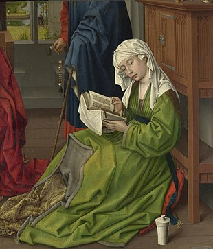
Mary Magdalen is also shown in many 13th century paintings as the one who supports the virgin Mary (1272) (plate 32: painted crucifix by the master of San Francisco, London: national gallery). This was criticized as an injustice to the Virgin who knew Jesus would rise again.
In the 15th century Mary Magdalene appeared in mourning groups which consisted of figures placed around the displayed body of Christ. Guido Mazzoni's life size terracotta group of the 1480's is this genre. (plate 38). This was probably inspired by the plays performed by religious communities. The purpose was to move the spectator to grief and repentance.
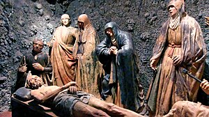
RESURRECTION PLAYS
From earliest Christian times, the resurrection had been represented by the procession of the two or three Marys to the tomb and their discovery of the empty tomb, meeting one or two angels, etc.
At first Mary Magdalene was just one of the women but later, as her cult became popular in the 11th century, she had a solo lament and became one of the first characters in western drama.
Up until the 13th century, male monks took the parts of the three women and the rubrics give fascinating details about the way they were to appear. in the 13th century, nuns took appropriately female parts.
Some writers clearly believed that the fact Christ first appeared to Mary Magdalene showed a certain lack of decorum, and sought to rectify the situation. Some writer chose to have Jesus first appear to his own mother after the resurrection saying: "Hail saintly parent". He then dutifully asks if he can go see Mary Magdalen. then the story returns to the gospel.
Most writers of this time tried to give greater prominence to the Virgin Mary than to Mary Magdalene even though nothing is ever mentioned in any gospels about Jesus appearing to his mother.
POST-ASCENSION LIFE
Mary Magdalen’s life after Jesus "ascension" was the subject of an enormous number and perplexing variety of legends which proliferated from the 11th century onward. Many were spawned by the supposed arrival of her relics in Burgundy.
Her travels took her to Asia minor, Rome, southern France (about which more later), or she died in Palestine, Ephesus and at Aix-en-Provence.
The most famous medieval account comes from the early 13th century and is called THE GOLDEN LEGEND. The most famous account is that Mary Magdalene crossed the sea in a rudderless boat with Martha and Lazarus and disembarked at Marseille. She is also accompanied by Sarah the Egyptian (a servant) and many others including Joseph of Arimathea. They are all figures important to Christianity in France, and Joseph in England.
The story is an 'orthodox' one in which Mary Magdalene and others had been set adrift by pagans but with divine intervention they land in France. They seek refuge and seeing all the people are pagans, Mary begins preaching to them. The rulers of that land (unnamed) are childless. She prevents them from a pagan sacrifice and her first miracle is the conception of a child for them.
This, of course, links back to associate her with fertility powers and goddesses like Ishtar and Cybele and may be why she was named the patron saint of the vineyard.
She also restores the princess to life when she is drowned on a pilgrimage to Rome. The prince leaves her dead with her child and when he returns from Rome, finds them both alive. They are baptized on their return to Marseille. Lazarus becomes bishop of Marseille, and Mary Magdalene watches while idols are destroyed.
Exhausted from her pastoral duty, Mary Magdalene retires for the last 30 years of her life to a mountain cave "unknown to anyone" and where there is no water, herb or tree. Angels come and take her to heaven for a "celestial repast".
She is covered only in hair and prays and fasts, atoning for her past sins. She receives her last communion from Maximinus (one who came with her) and then dies. He buries her body and has himself interred and from their tomb miracles abound.
A visual counterpart to THE GOLDEN LEGEND is a panel by a Tuscan artist from @ 1280. It shows the Magdalen as a hermit with scenes from her life, from her incarnation as Luke's sinner to her burial. She holds a scroll urging all those who have sinned not to despair, and to follow her example by returning to God. (p. 187 in Holy Grail)
It is a lasting image of her, created in the Middle Ages, for from the late 15th century the hermit in her grotto becomes the most prevalent representation of Mary Magdalen.
Thus, we have gone full circle for it was Vezelays latching onto the early legend of the Magdalen which contributed to the flowering of the medieval myth.
From now on, to serve doctrinal purposes, her penitential end would take precedence over the other, gospel, elements of her story. Mary Magdalene progress from the state of sin to sanctity mirrors the way in which she represented and reflected not only the medieval churches’ notions about women, sin and redemption, but also the social concerns of the Middle Ages. Even the greatest of sinners could reach heaven.
MARY MAGDALENE: THE WEEPER
The penitent in her grotto was the most pervasive image of Mary Magdalen during the 16th and 17th centuries. It was not, of course, a new idea, what was novel was the visual language used to describe her, and which gave the image new meaning.
What happens is that the idea of a return to innocence shown by depicting people as nudists Virtualis, ie, the nudity of redeemed chastity. It is this iconography of penitence and asceticism that Mary Magdalen and Mary of Egypt are absorbed, the only female saints to be represented naked in Medieval art.
The contrite Mary Magdalene becomes the symbol of reconquered purity, but her very nakedness is a negative comment upon her feminine and sexual nature. Early images from the 13th century show her covered by hair (1225) naked by implication only.
From the 13th century the penitent Magdalen became the most popular image of the saint in Italy, painted in churches, monasteries and hospitals, in fresco and on panel, under the mendicant orders, especially the Dominicans who especially promoted preaching of public penitence.
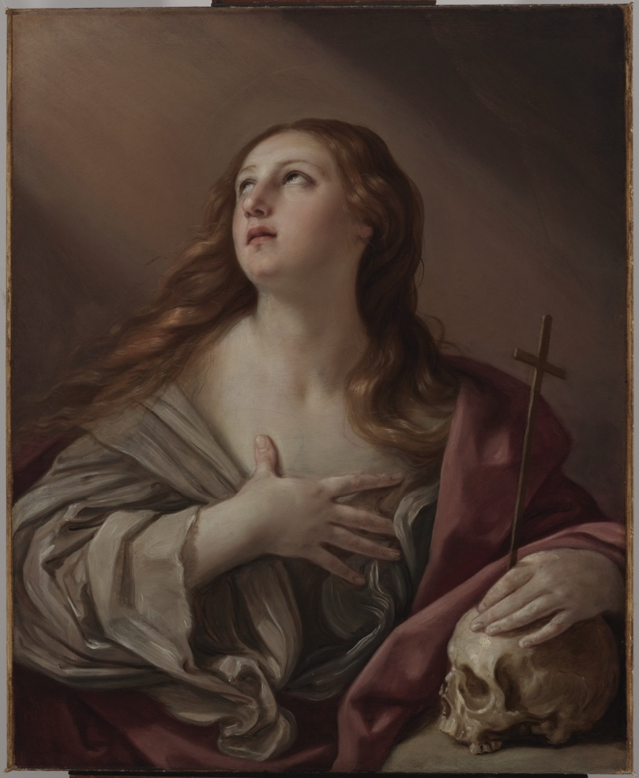
By the 15th century, in Germany, the veil of hair had been drawn back to reveal most, if not all, of her body. (plate 90) Gregor Erhardt's polychrome wooden statue of @ 1510.
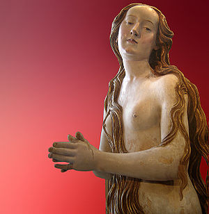
In Italy the range of images was enormous but the most striking is Donatello's gaunt, ascetic figure with ravaged, elderly features speaking of her 30 years retreat ((plate 49)
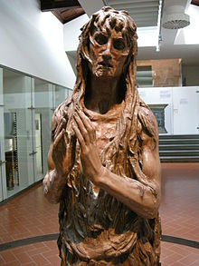
The 16th Century produced very different figures. It was within aristocratic settings that the iconography of the repentant Magdalen developed from this time onward.
During the renaissance, a fusion of Neoplatonism and Christianity, couched in elegant prose and poetic flourishes influenced by the supreme poet of love, Petrarch, Venus could be invoked together with the Virgin Mary, who in turn could be addressed as the "goddess of goddesses". Madonnas and Magdalens consequently resembled Venuses and vice versa.
16th century art and literature were replete with images of beautiful women, naked and draped, celestial and terrestrial Venuses, depicted and described in conformity with the ideals of feminine beauty propounded by male writers of the period.
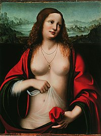
It was thus that Mary Magdalen became the 'goddess of Love' or the 'Venus of divine love' so often described in the wealth of literature devoted to her in the 16th and 17th Centuries.
It was in the climate of Christian humanism that Titian painted the first of his many Mary Magdalens (1531-35), one of which became perhaps the most famous of all Magdalen pictures and was the progenitor of a long line of weeping penitents (plate 50).
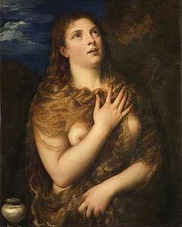
He emphasizes her sensuousness by the way she is posed in his adaption of an antique statue, the classical Venus Pudica or 'Venus of Modesty.' It was enthusiastically received by his contemporaries and was copied frequently by other artists. It was also maligned by the 'pious'.
A recent interpretation of Titian's Mary Magdalen sees her as the embodiment of 16th century theories concerning sacred and profane love, setting her as a sacred prostitute within the context of Renaissance ideals of beauty and the contemporary celebration of court manners.
Mary Magdalen’s penitence, once symbolized by nakedness cloaked in hair, coincides with the Renaissance rebirth of the classical female nude of which the Venus Pudica was one of her guises. There is no known statue of a female nude after the second century CE--Venus vanishes to rise again in the late fifteenth century.
Titians figure merely reflects the national tastes of his time. His Mary Magdalen was the prototype of images of the Magdalen of the latter half of the sixteenth and seventeenth centuries. In the hands of lesser artists, she became the "great amorous penitent' or 'Venus in sackcloth'.
COUNCIL OF TRENT (1545-1563)
The counter reformation within the catholic church was stimulus for art. The purpose of religious art as the "Bible for the illiterate" as Gregory the Great called it, was to teach the faithful thru images which were clear, simple and realistic, SO they might be reminded constantly of their faith, imitate the saints, and cultivate piety.
Mary Magdalen was again emphasized as a model of penitence, salvation and mystical love. Both Teresa of Avila and St. Ignatius of Loyola emphasized her penitence.
From the second half of the 16th century, the cults of saints who had won their way to heaven thru repentance were particularly sanctioned and promoted by the Catholic Church.
However, artists were specifically instructed not to read texts such as the GOLDEN LEGEND (where Mary Magdalene Provencal sojourn is related) or any other hagiography. This was to answer the protestant reformation who repudiated all saints.
In 1588 Annibale, with others, founded an academia of art in Bologna which became a famous school of fine art with many famous artists. They all contributed to the 17th century image of MM. Figures now became heroic in stature, monumental and sculptural, and saints became heroes.
Annibale's best pupils followed him to Rome where the patronage of popes, princes and cardinals fashioned artistic taste. Much in demand among this ecclesiastical and aristocratic clientele was the subject of the weeping Magdalen--an image which was both essentially of the Counter-reformation, as it treated of the sinners return to God, and erotic, a kind of penitential pin-up, to be hung in private apartments.
In poetry, Mary Magdalen's tears flowed into the great literary cult of penitential poetry, the "cycle of remorse", which sprang up in Italy during the Counter-Reformation, flooding across Catholic Europe, and even manifesting itself among Anglican poets in England.
MARY MAGDALEN — 17TH AND 18TH CENTURY
The "penitent in her grotto" reappeared in a new genre of painting, the "saintly" portrait, known primarily in England and France and created by and for courtly circles. Her image became entirely secular for two reasons:
First, to adhere to the tastes of the monarchs, princelings and minor aristocrats and second to adhere to the contexts of the establishment in mid 18th century England of reformatories for women called "Magdalen houses."
Italian art came under secular patronage from the mid 17th century on and in protestant northern Europe the image of the penitent Mary Magdalene began to make its mark in secular art. Paintings of her, semi-naked in her repentance, joined the canvases of other nude and semi-nude females such as Cleopatra.
Women had been posing for Mary Magdalen sometimes since the late 15th century so that a few noble women posed before the 18th century. However, the fashion for being painted as Mary Magdalene really took off in France in the mid 18th century.
The vogue for saintly portraits in general declined in the 18th century but the taste for images of Mary Magdalene did not. One of the most famous was a portrait called Magdalen reading in a Landscape by Correggio (1522) (plate 72). Though painted 2 centuries earlier its popularity peaked in the 18th century.
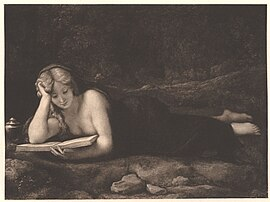
Much Italian art made its way north of the Alps, accommodating the particular predilection for 16th and early 17th century paintings of female nudes manifested by many northern princelings, which Italian artists hastened to supply. Thus, Correggio's Mary Magdalen became even more widely known thru other versions of the same theme, such as Orazio Gentileschi’s "Penitent Magdalen" (1625-28) plate 73
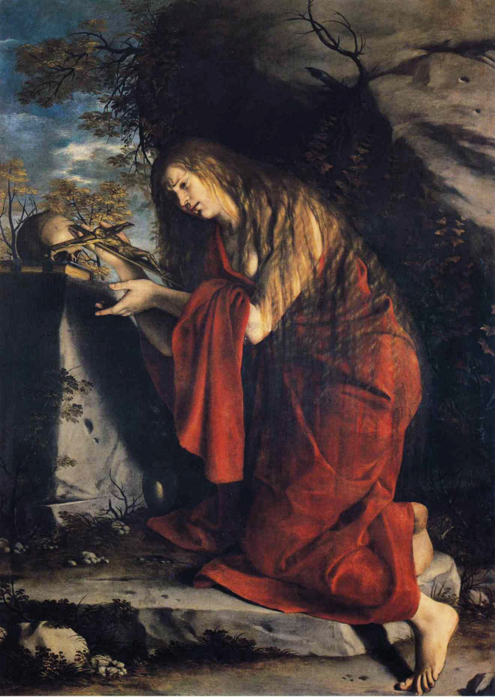
Secularized further, she is brought closer and she exposes one breast while reading the bible.
MAGDALEN HOUSES
The first description of an institution with Mary Magdalene as its patron comes from London in 1758. It was basically a philanthropic attempt to benefit "fallen women." It was intended as a half way house for those driven to seek asylum thru penitence rather than punishment but excluded those with venereal disease.
They received a harsh regime of moral education and feminine employment such as mending, millinery, children's toys etc. When they 'graduated' they were sent off to suitable situations as domestics, or seamstresses.
Mary Magdalen became the protectress of repentant lower- and middle-class prostitutes in an establishment whose major criteria for acceptance was 'true repentance'. They were given a framework of middle-class values.
Similarly, their portrayal as 'sexual victims' in much of the polemic and moral literature of the period derived from the middle-class perspective and thus objectified them. Under employment, low wages for women, swelled the number of prostitutes in the 18th century.
In the 19th century the perceived threat of disease and decadence to middle class England from the prostitute, charity in Mary Magdalene name was to cast its benevolent eye over her.
MARY MAGDALEN IN ART AND LITERATURE: 19TH AND 20TH CENTURY
While Rome was closing ranks against this "modernism" with Vatican one (papal infallibility) and the immaculate conception of the virgin Mary, which we will deal with in the 2nd part of the course, other writers and artists were using Mary Magdalene to make explicit her "sexual fallenness"
Such works as Hawthorne's Scarlet Letter (1850), Flaubert's Madame Bovary (1857), Tolstoy's Anna Karenina (1877), all works which deal with the theme of the fallen woman one way or another.
What is common in all these works is their use of the non-gospel character of Mary Magdalene which, paradoxically, while offering a metaphorical vehicle thru which women's "nature" and sexuality could be explored, at the same time helped to ensure that Mary Magdalene herself remained locked in her mythical persona.
The same was true in the visual arts where depictions of the penitent Magdalen in paintings between 1800 and 1896 outnumber the Gospel woman 91 to 44. Artists and sculptures were unable to resist the appeal of the penitent than were the novelists.
The 19th century Mary Magdalene was used as a vehicle to explore ideas about sexuality, love, sin, and the position of women in middle-class society. Her re-evaluation in non-Catholic churches was perhaps the most important development of all. The women by the cross represented the most positive aspects of woman in Christianity.
Her ministering role, strength, courage and faith are in sharp contradiction to traditional "feminine" meekness and passivity, traits which had long served only to subordinate women.
MARY MAGDALEN NOW
Mary Magdalen emerged into the spotlight again late this century. The most notable, though not only, time was in the movie "The Last Temptation of Christ" which came out in 1988. In April 1990, five Roman Catholic extremists were jailed for bombing Paris cinemas which showed the film.
During the summer of 1988, 31,000 protestant pastors in the US had threatened to boycott the film, some of the most radical claiming a vile Jewish plot to degrade Jesus was behind it.
This uproar was a testament to the latent violence which can still be engendered by threats to dogmatic belief. Similar to the reaction within Islam to Salman Rushdie's novel Satanic verses (1989)
Nikos Kazantzakis (1885-1957) tried to present Jesus as a human who struggled with his own desires. The flesh is embodied in Mary Magdalene who, following the age old tradition, is the local whore when we see her first, and it is all Jesus' fault, for he has loved her since he was 3 years old.
Kazantzakis Mary Magdalene is a composite creature: Luke's sinner, and the woman taken in adultery whom Jesus rescues. At Cana, he and Mary Magdalen become bridegroom and Soul/bride. She is woman, flesh--the universal, timeless symbol of man's temptation to stray from God.
Kazantzakis’ Jesus chooses to reject his humanity in favor of his divinity and was accused by the church of Docetism, the heresy which denied Christ’s humanity.
OTHER MEDIA
Kazantzakis novel achieved greater notoriety thru film than it did in book form. Other films have also featured Mary Magdalene in a major role. Denys Arcand's marvelous "Jesus of Montreal" (1989) and Kieslowski's "a short film about love" (1989) shows the continuing relevance of using Mary Magdalene composite figure to illustrate sexual mores withing a contemporary setting.
In neither is she depicted as a prostitute, but she uses her body as a model as a source of income (J of Mon.). In the other she is a sexually liberated woman who the R. C. church would disapprove of.
Mary Magdalen's first appearances in movies were in several silent French films. dating from 1902 - 1914. It is not till Franco Zeffirelli's "Jesus of Nazareth" (1977) that Anne Barcroft plays as a prostitute who is redeemed and supports Mary the mother at the crucifixion.
"Jesus Christ, Superstar" (1970) by Andrew Lloyd Webber and Tim Rice have Mary Magdalene as the redeemed prostitute who bathes and anoints a travel weary Jesus and sings "I don't know how to love Him", accustomed to sexual love as she is.
In a century that has produced less religious art than any other most artists do not choose to portray Mary Magdalen. Some have, such as Eric Gills the nuptials of God (1922) which shocked many Catholics. (plate 87) though he was a convert to Catholicism.
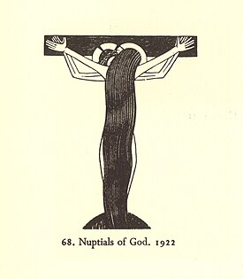
and a more recent Sculpture by David Wynne (1963)(plate 89)
Found in Ely Cathedral.
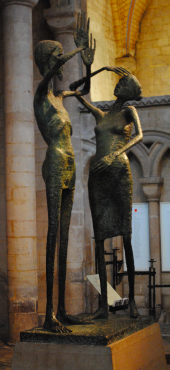
Over the last decade or so Mary Magdalene has become the heroine of a steady stream of semi-mystical novels and short stories, mostly from feminists. She has come to represent the liberated woman of the late 20th century, and her myth has been recreated in that light: she is a rebel, a traveler, an independent woman, she might even have a child by Jesus.
Some of these writings are: Carolyn Slaughter: Magdalene, whom she gives an extraordinary biography. Michele Roberts Wild Girl (1984) is the story of a liberated woman, brutalized but free.
Michele used a great part of the gnostic gospels to conjure up a very personal alternative Christianity in which human and physical love are part of divine love, are the resurrection and the life. She has also used the Gnostic gospels to posit a tract for a Christian feminist religion.
CONCLUSIONS:
In 1978 the epithets "Maria poenitens (penitent Mary) and Magna Peccatrix (great sinner) were deleted from the entry for Mary Magdalene in the Roman Breviary, thus officially removing the stigma which had been attached to her name for nearly 2000 years.
Mary Magdalen figure has emerged in bold relief, restored to her N. T. role as chief female disciple, apostle to the apostles and first witness to the resurrection. however, this has mostly gone unacknowledged by Rome.
However, this is not so in churches who accept the higher critical studies of the Bible and now acknowledge that women have really had the right and duty to minister all along. The sole characteristic that stands out about Mary Magdalene is the fact that she is not identified as the mother or wife of some man. This is the threat to the Roman and Orthodox church.
So long as the church chooses to disregard the new scholarship which has reinterpreted the women of the gospels, so easily dismissed by calling it feminist, it will continue to subordinate the "real" Mary Magdalene in favor of "mother Mary".
It is to her we now turn: